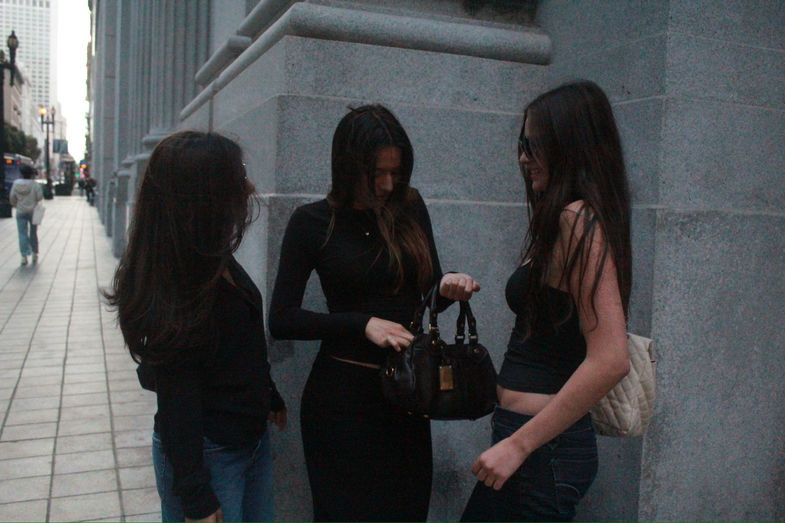

A Field Guide to the 90s

The 90s were a time of effortlessness and authenticity that is hard to recreate today. Figures like Carolyn Bessette helped reinforce what it means to be who you are in a way that speaks to you and only you. This time period in fashion was all about minimalism and practicality, a huge contrast to what the 80s were all about. The 80s were excessive and colorful, self expression in its loudest voice. The 90s helped make minimalism the norm, which is shown through Carolyn Bessette.
Calvin Klein is one of the many brands of the time that brought minimal clothes alive. Their advertisements including models like Kate Moss came with a lot of attention from the public. Calvin Klein wasn’t just known for their advertisements, they were also known for making underwear more casual. Their iconic slip dress was seen on many famous figures, including Gwyneth Paltrow. At the 1996 Academy Awards, Paltrow was seen wearing a Calvin Klein pale pink silk dress. This became a turning point in what minimalism was and how it can be styled in different events. If a movie star like Paltrow could wear a slip dress to an awards show, women could wear it casually in public.
Paltrow wasn’t the only muse of Calvin Klein; Carolyn Bessette played a major role in popularizing minimalism. Before gaining her title as Mrs. John F. Kennedy Jr., she was also known as a VIP publicist for Calvin Klein. Bessette started as a sales associate in Boston before Klein spotted her and built a mentorship with her, where she worked her way up to handling high profile clients. Bessette had high quality basic essentials handed to her, which elevated her style. She’s known for her iconic bootcut jeans and oval sunglasses. Her style was unique in her own way, despite her closet being filled with basics. She wore what she thought was necessary and avoided brand logos, unknowingly creating ‘quiet luxury.’ She wasn’t dressing to impress, a theme seen frequently in the 90s minimalism era. Although, everything was deliberate at the same time. This created an interesting story with her wardrobe and it’s what made her style so relevant. She’s definitely a blueprint to what minimalism should look like and what it looked like in the 90s.
Carolyn Bessette proved that having a basic style doesn’t necessarily mean you’re boring. If there’s authenticity and intentionality in what you wear, it can tell a story that millions fall in love, which was the case for Bessette. She’s someone that makes 90s minimalism still relevant today, along with Calvin Klein and his line of clothing. It’s not what you wear, it's who you are that makes your style interesting.